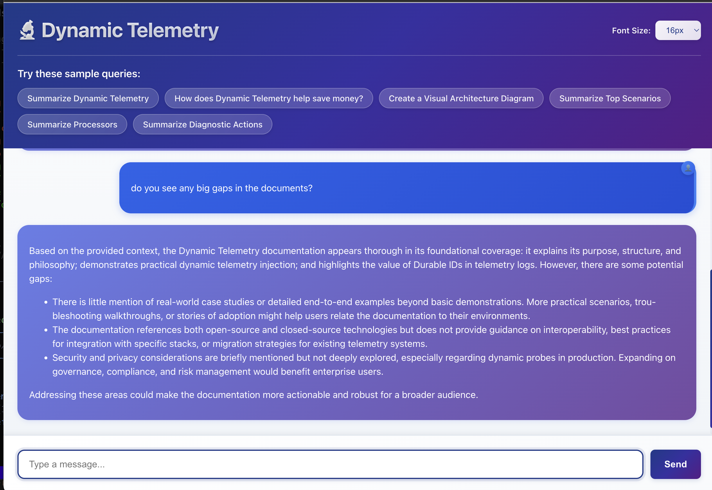
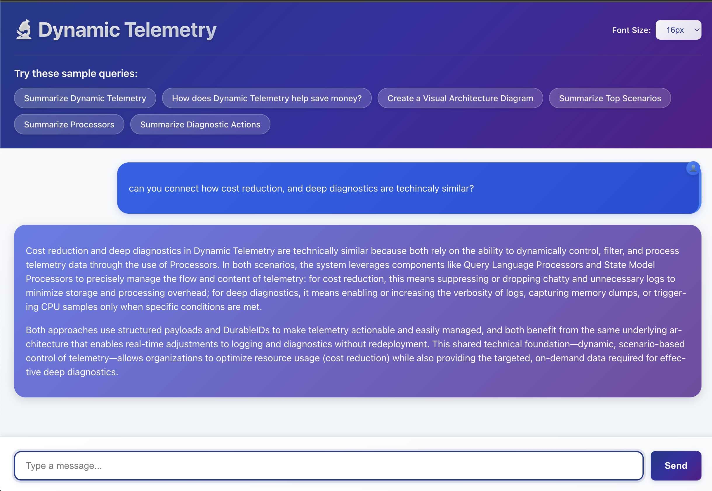

Building that AI Editor I've always wanted
TLDR: I've always wanted access to a professional who could help me edit documents; so I vibe coded one (using a scoped RAG+LLM) on the 4'th.
In my first week of college, we took a technical writing assessment. I wrote about a 3D CAD program I was building for the HP 48GX calculator to help rescue squads find lost cavers. Back then, Windows 95 was new, most computers lacked floating point instructions (very few had GPUs), and pocket computers weren't a thing.
I distinctly remember my technical writing professor inviting me to his office.
This wasn't the sort of invitation you wanted.
Unexpectedly, He started with a very sincere comment. He said that I had more to say than anyone in his class; but that I also really needed more help than most to express them clearly.
With all sincerity he advised me that, as soon as possible, I should hire an editor to help articulate my thoughts.
Over the years, I’ve had coaches, mentors, and advisors – but to date – the most impactful way I’ve found to express myself remains in software.
I write code. It’s what I do.
Now interestingly, much of this has changed since CoPilot and LLM's have appeared on to the scene; now I do the thinking – it straightens out the content. I love it. I can’t live without it – I even have invested in local LLM’s, using Meta’s Llama, just so I can keep working even when disconnected. At Microsoft I've been doing a lot of writing for a vision of telemetry that is slowly gaining traction. Without diving too deeply in it now, it’s called Dynamic Telemetry and as of writing there are a few 100 documents of content. I really could use that editor.
I want to ask the editor questions like:
- does my content have gaps?
- if I've overemphasized one topic
- if I need to explore another topic more thoroughly
I'd like to go deeper. I want an objective assessment of my document's strengths and weaknesses—much like how I test code. Ideally, I want an editor that can break my writing into smaller, testable pieces and automatically run a battery of precise questions against each section.
This weekend was the 4th of July, and some of my tech friends and I were I discussing how we use AI in our daily workflows. Each of us have built AI agents to automate routine tasks. One friend, Tim, even shared on LinkedIn about using command line tools for repetitive jobs, sparking further discussion.
This got me thinking could I write a tool that serves as this editor that I've always wanted? Could I write an interactive chat bot that knows and understands the content and could answer questions that I have to poke and prod looking for gaps in my explanations.
If I could this would provide a sort of road map for where I can strengthen content or pull content if I'm already too wordy. Well in short yes I've made a simple chat bot using Copilot in VS Code, Azure Search, and AzureAI.
In fact that vibe coded it in less than an afternoon.
I can't expand on this now but let me know in the comments if you'd like a tutorial. What I did isn’t rocket science, but you probably do need to be a programmer. Meanwhile, feel free to try my editor—I'll keep it running as long as it's not abused.
- 95% vibe coded, using languages/libraries/techniques where I'm already skilled
- Uses Azure AI Search (free tier) for content
- Uses AzureAI for LLM
- Used VSCode, CoPilot plugin
This editor may not matter to many, but for me, combining different tools and AI has helped in unexpected ways. Thanks to everyone who shared ideas and inspiration this holiday weekend!
I finally have the editor I've always wanted! If you'd like to play with it, feel free - I'll keep it publicly available as long as it's not being abused.
Examples
Here are a few examples that I found both interesting and useful. I 100% agree with the AI "Document Editor", they didn't cost much money, I could work with immediate feedback, and let me respect the time of my friends, so they can help me with more challenging problems.
Win-Win-Win. I'll make the changes! expect a PR shortly!
-
Example 1: The AI editor pointed out a section where my explanation was unclear, suggesting specific ways to clarify my argument. I'll improve this!
-
Example 2: The AI editor recognized a strong summary, noting that it effectively captured the main points and provided actionable next steps. I'm happy!
These examples show how an AI-powered editor can offer practical, actionable feedback—helping you refine your writing and communicate your ideas more clearly.
Example 1 : Improvement Needed

Example2 : Nailed it.
